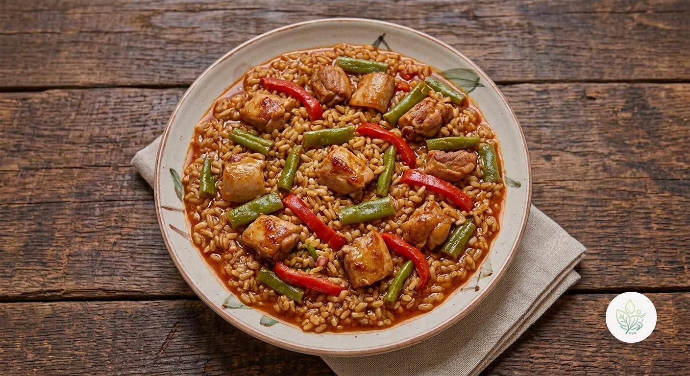

Arroz Integral con Conejo y Judías Verdes
BUn arroz meloso de conejo con judías verdes, pimiento y tomate, con pimentón y ajo. Un plato único de cuchara con casi 40 g de proteína por ración.
El conejo es una de las carnes más magras (solo 3,9 g de grasa saturada por ración en toda la receta), el arroz integral aporta fibra y las judías verdes y el pimiento suman verdura al plato. Lo calificamos B por el colesterol dietético del conejo.
Ingredientes (toca el nombre para ver su ficha)
- 🌾 Arroz Integral (seco) 240 g
- 🐇 Conejo 450 g
- Judías Verdes 150 g
- 🍅 Tomate Triturado 150 g
- 🫑 Pimiento Rojo 100 g
- 🫒 AOVE (aceite de oliva virgen extra) 20 g
- 🧄 Ajo 5 g
- 🌶️ Pimentón 3 g
- 🥣 Caldo de Verduras 600 g
Elaboración
- Trocea el conejo (pide al carnicero que lo deje en trozos pequeños y sin hígado) y dóralo en una cazuela con el AOVE a fuego medio-alto. Retíralo.
- En la misma cazuela sofríe el pimiento en tiras y el ajo picado 5 minutos; añade el pimentón y el tomate triturado y cocina 3 minutos más.
- Devuelve el conejo, añade las judías verdes troceadas y el arroz integral, y remueve un minuto.
- Vierte el caldo caliente, lleva a ebullición y cocina a fuego suave, tapado, unos 40 minutos, hasta que el arroz esté tierno. Deja reposar 5 minutos antes de servir.
Información nutricional (receta completa, 3 raciones)
De las grasas, 11.7 g son saturadas · de los carbohidratos, 19.3 g son azúcares · sodio: 419.7 mg
Información nutricional (por ración)
De las grasas, 3.9 g son saturadas · de los carbohidratos, 6.4 g son azúcares · sodio: 139.9 mg
Preguntas frecuentes
¿Cuántas calorías tiene la receta de Arroz Integral con Conejo y Judías Verdes?
Toda la receta de Arroz Integral con Conejo y Judías Verdes tiene 1840.7 kcal repartidas en 3 raciones, es decir, unas 613.6 kcal por ración.
¿Puedo hacerlo con arroz blanco?
Sí, bastarán unos 18-20 minutos de cocción, pero tendrá menos fibra y bajará algo la nota.
¿Se puede sustituir el conejo?
Con muslos de pollo sin piel funciona igual, aunque el plato cambia de carácter.
¿Se puede preparar con antelación?
Sí, aguanta bien 2 días en la nevera; añade un chorrito de caldo al recalentar, porque el arroz sigue absorbiendo líquido.